Following The Plow
The Plow, a basic tool of the farmer and large-scale gardener , breaks and pulverizes the ground, adding humus, fertility by covering the vegetation and manure. Plowing helps the soil hold its precious moisture and circulates the air. Although plow tools are difficult to obtain, if you have enough interest they can easily be acquired.
By the Mother Earth News editors
May/June 1974
THE WALKING PLOW
The plow-the basic tool of the farmer and large-scale gardener-breaks and pulverizes the ground and adds humus and fertility by covering the vegetation and manure. Plowing helps the soil to hold its precious moisture and circulates the air. (Did you know the earth has to "breathe" to be productive? Although I didn't realize it until recently, the land is very much alive and teeming with organisms that can't be seen with the naked eye.)
Walking plows were produced B.T. (before tractors) in many styles to meet a wide variety of soil conditions. There are still a few handmade wooden models around. One of our neighbors has a full set which he said his father built and made many a crop with. I'd like to have met the old gentleman, since I'm dead certain it takes an even-tempered soul with a zeal for finishing what he starts-and a mighty sharp drawknife, too-to make wooden plows from the shares to the handles.
Nevertheless, American farmers back in 1797 frowned on the first cast-iron plows. They believed that the metal would poison the land, reduce fertility and promote the growth of weeds . . . and that the point of the share would soon wear off. How about that?
The first plow with a really good interchangeable cast-iron moldboard, landside and standard or frog (see glossary) was patented by John Jethro Wood in 1819.
We have three plows and a planter on our place, and they're sufficient to raise all the food we need for us and our animals. Most of these implements belonged to Theo's family and have been around for many years. They've had to have new handles but-old as they are-they're still good enough to make a crop.
THE TURNING PLOW: If we could have but one plow, this is the one it would be. It breaks open and mixes the sod and turns the earth up to greet the warm sun.
THE MIDDLEBREAKER: Also known as "middlebuster" or "lister", this plow is designed to turn a furrow of dirt each way, bust out a ridge or bed up a new row for planting in one operation. We don't use ours very often.
THE GEORGIA STOCK: This versatile plow is the one you work your crops with. It has interchangeable "sweeps" and shares for cultivating different sizes and kinds of vegetables.
THE PLANTER: We found our Cole planter a while back in a small country general store where it had been some 20 years. The owner sold it to us, still shiny new, for the same price it would have brought originally: $40.00. These gadgets are very difficult to find now and any that you locate should cost $85.00 at the least. We felt very lucky when we bought ours, because this little machine is a dandy. You just fill its hopper with seeds (any kind that aren't very tiny) and they're dispersed and covered all in one operation. This is a great way to plant ten acres of corn and several pea patches.
We rarely use another horse-drawn tool-our harrow-but I should mention that it's a flat rig with solid iron teeth which is dragged over plowed land to smooth out the lumps.
WHERE TO PURCHASE PLOW TOOLS
Writing this article has been a lot of fun, and one of the nicest experiences of all was my visit to our town's hardware store. Fomby's Hardware has been owned and operated for over 50 years by Mr. Oswald Fomby . . . with the assistance (for the last mere 35 years) of Mr. Billy Corry.
These two gentlemen-and they are just that-took me to the back of their establishment for our talk. I peeked up in passing at the long straps, plow handles, chains, chairs, stovepipes and multitude of other articles overhead, and breathed in the special smell of a hardware store . . . which I think of as a mixture of leather, stove polish and oil. In the rear-amid rolls of wire, wheelbarrows and the like-we sat, chatted and drank tiny cups of coffee poured from a French pot while Mr. Fomby and Mr. Corry told me stories of our town when it was young.
I finally got around to asking Mr. Fomby about the availability of plowing equipment, and he told me that many of the manufacturers had simply gone out of business. When I speculated that increased demand might stimulate the supply, he shook his head and said, "Not in our day, it won't." I wonder.
Articles that are still to be found have, of course, increased tremendously in cost. Mr. Fomby gave me the cost of some items he sold years ago and compared them to today's price tags:
According to Mr. Fomby, a person in our neck of the woods who's seriously interested in obtaining horse-drawn plows can visit almost any farm where a tractor is parked and find all sorts of implements back in a dusty barn. The owner would probably be only too glad to let the articles go for a reasonable price if he thought they were going to be used to till the earth. (He added that he himself had a full set which he might be interested in selling.) Ads in local newspapers and farm magazines would, I'm sure, also bring results.
The friendly hardware dealer then suggested that a blacksmith-if you can find one-will make horse-drawn plows for a small fee. These craftsmen are hard to locate and many are quite elderly, but they're still around (often in large cities where they forge horseshoes for rodeos, riding clubs and horse lovers) and might be able to construct plowshares and other necessary iron parts. This would probably be a last alternative, but it's a thought nevertheless.
In spite of Mr. Fomby's pessimism, I still believe that if enough interest is shown in acquiring draft animal plows and attachments, the supply will very soon have to meet the demand. Perhaps I'm too optimistic about this new way of life . . . but I don't think so.
PLOWING
Blondell's wife, Emily, told me that when she was just a sprout of a young 'un she and her mother and a mule finished a crop after her father became ill. Emily began rattling off jargon about plows, blind bridles and so on, and one could tell she spoke from experience. She said that if you had a good mule, plowing was easy to learn and not hard to do.
Theo agreed that if one is brought up to the business, there's really nothing to it. But I wasn't, and all its whens and hows were a mystery to me. When my husband began explaining, however, and when I'd observed with my eyes wide open, I could see that a little horse sense is all that's needed to know how to plow with an animal and what tool to use.
Then-although Theo was a bit weary from all my questions-I asked him a goody: 'Suppose you were a young man with a piece of cleared land and you wanted to take your newly acquired mule and plows and plant you a patch of corn. Give me a blow-by-blow description of what you'd do."
My mate heaved a sigh, looked into my faded, blue-denim eyes and began:
"The first thing I'd do would be flatbreak the field with the turning plow. I'd do this in November or December if I lived in the North, and as late as I wanted here where the ground rarely freezes.
"To flatbreak, I'd go all around the edge . . . keep plowing around and around and turning the earth until I was in the middle of the section of land. Then I'd let the soil lay all winter, if possible, until just before time to plant corn. For us, that means May and sometimes earlier.
"The next thing is to take the turning plow again and 'lay off' or make your rows. The best way is to 'four furrow': Plow two furrows with about a 12" balk (unplowed space) between. Go back, begin about 4" inside the balk and plow another furrow . . . then do the same on the other side so that you have only about 4" of untouched ground left in the middle. Do this all the way across your flatbroke field.
"After that, I'd hook the Georgia Stock to the mule, using the bull tongue and about a 20-inch sweep (see illustration showing sweeps), and this time plow out the balk. When I was all finished I'd have nice rows with little trenches in the middle, into which the corn seed would be dropped and covered by the planter. If I didn't have a planter, I'd use the Georgia Stock and just the bull tongue and go down each side of the trench to throw the dirt over my seed. May take longer, but it works just as well.
Later on, says Theo, the Georgia Stock-the plow of plows-is fitted with sweeps of different sizes to work the crop at various stages of growth. When corn is about six inches high, for example, it should be plowed with the bull tongue alone (we call it a "scooter", because that's what it does to the dirt). Ten days later you should till the patch again, this time using that old bull tongue and a 16" sweep. Then, in about 10 more days, the field should be "layed by" or cultivated for the last time . . . but for this final going over you use a turning plow. Simple!
WHAT'S IT LIKE?
Since beginning this article I've marveled at the wonderful thing that happens when weed-covered land is broken, rowed up and made ready for the seeds . . . small miracles in themselves. I love to walk barefoot in newly plowed ground. (My tennis shoes are immediately filled with dirt when I start across the field, so I might as well kick them off and really enjoy it.) The turned-up earth, dark with moisture, is damp and rich-feeling between my toes.
It's hardly surprising, then, that I asked Theo to let me plow a little just to get the feel of it. He objected at first because Beauty is so undisciplined . . . but, finally, he relented.
My first feeling when I got between the handles was one of sheer fright. I hadn't realized how big Beauty was from her back side, or how vicious her hoofs looked. I could just imagine her "kicking over the traces" and going on a wild tangent out across Theo's pretty plowed field . . . and me hanging on with my big bare feet flying through the air. But Theo was prepared for any emergency, and held the lines as I gave the commands.
To be perfectly honest, I didn't like it at all. I felt just as much out of place as I would feel breaking a wild horse. I plowed a few yards and turned the handles over to my head and master. If l had to do the job for some reason I believe I could manage it . . . with practice and my heart in my mouth. But in all likelihood, I'd probably go to the hoe for my gardening.
Just for contrast, though, I'll give you Theo's report on his feelings about plowing with an animal . . . back when he had one he could keep up with. At that time we owned about the best plow, riding and cow horse around. His name was Buck, and we lost him from colic in spite of all our efforts.
"Old Buck," says Theo, "was sheer pleasure to plow with. The only noise was the tinkling of the trace chains and my soft commands of 'whoa', 'gee' or 'haw'. The birds sang so pretty and I could drink in Mother Nature in all her glory.
"Sure, the sun was hot as hell most of the time and made my clothes stick to my skin, but I figured it was getting the poisons out of me. That big oak at the end of the row spread out her welcoming arms, heavy with shade, and I'd pull old Buck and me into it and a wind would come up from nowhere and cool us both off like air conditioning, only better. I'd feel the good the walking was doing my legs and circulation, and a sense of 'everything's great' would come over me. There's just nothing like it."
Anyone who wants to master this art Theo loves so much should be able to find a teacher. There are farmers all around us. Oh, they may be in other walks of life now, but there are still many folks in smaller towns and communities who would gladly teach a willing soul how to horse-plow if he wanted to learn. People's minds are becoming less narrow, and I believe they see the new breed of settlers in a different light. And, after all, you can find out how to do anything on earth if only the mill and desire are there.
Skills like this used to be handed on from one generation to the next . . . and, in our family, they still are. We don't anticipate leaving behind us a bundle to be split by Uncle Sam and our heirs-brick mansions to decay and tumble, or automobiles and boats to rust out-but, with God's help, we do intend to pass on a way of life for our children and others to follow if they want true peace of mind and contentment. Teaching our offspring to plow is a small but important part of this heritage.
We want our children not only to use the horse or mule successfully, but to enjoy using him . . . to feel a surge of God's presence in their souls when they're in the middle of a green cornfield "laying by" their crop. We want them to feel the soft earth around their feet and legs and to know that it lives. We want their bodies to be strong and their limbs agile. We want them-in short-to know their purpose for being on this earth and to meditate on it while Following the Plow.
|
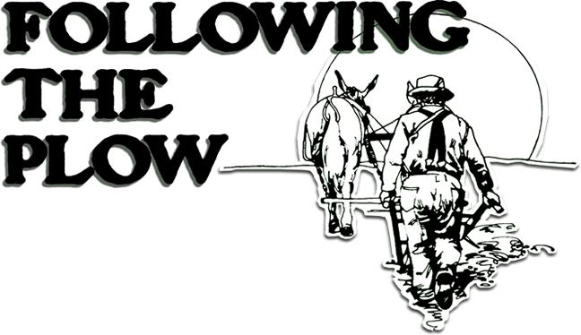 SPECIAL NOTE: This is the second half of a two-part article. The first segment of this piece appeared in MOTHER NO. 26. |
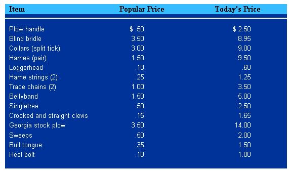 common walking plow |
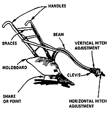 the walking middlebreaker |
|
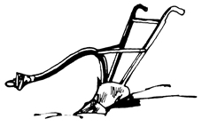 plow bottom |
 specialized plow bottom |
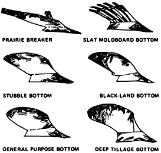 horse-drawn, one-row corn drill |
|
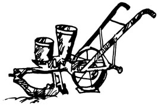 Heavy-line horse"" is hitched correctly. Dotted line shows same horse with hitch raised at ""A"" to accomodate short hitch. If dotted line horse were hitched same as heavy line horse, an up-pull on beam would result. Too long tugs have an opposite effect. Raising or lowering clevis at point ""A"" corrects line of draft from hame to point ""B"" |
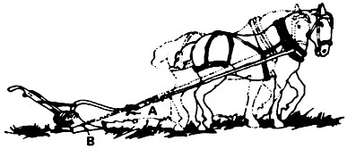 Size of team has direct relation to point of hitch. The smaller horse in dotted outline, requires a lower hitch at point ""A"" than the larger horse. Clevis must be lowered to maintain straight line from point ""B"" through ""A"" to hame. correct and incorrect |
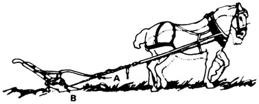 fender, sweeps and ""bill tongue"" for walking plow |
|
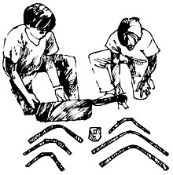 middlebreaker, front and side view |
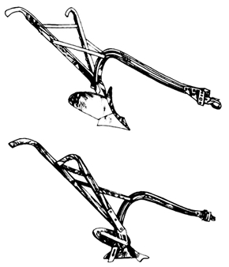 |
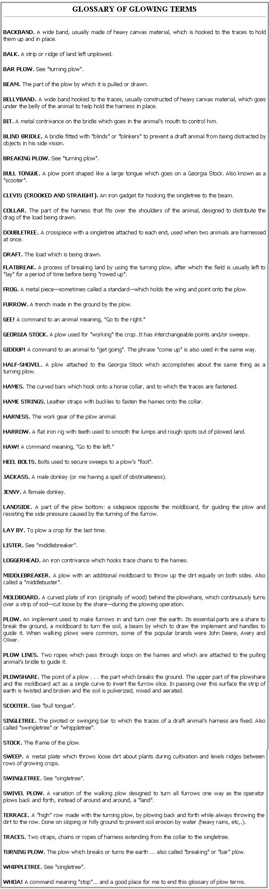 |